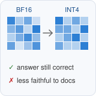

Updates
- Sep 2026 LORE-KV, our KV-cache eviction paper, is under review at ICLR 2027.
- Aug 2026 Faithfulness Is Not Free is on arXiv and accepted at the GroundLM workshop at EMNLP 2026.
- Aug 2026 Started my M.S. in Artificial Intelligence at LUMS.
- Jun 2026 Joined the University of Oklahoma as a research intern with Dean F. Hougen.
|
Research
I work on trustworthy, human-centered AI for high-stakes decisions: when LLM assistance improves a decision, when it propagates errors through anchoring or sycophancy, and how to evaluate models by their effect on the final decision rather than by standalone accuracy.
* denotes equal contribution.
|
|
|
Monte Carlo Future-Query Estimation for KV Cache Eviction
A. Bilal,
M. A. Mohsin,
M. Umer,
W. H. Raza,
A. U. Asad,
Y. D. Kwon,
M. Valko,
D. F. Hougen
Under review at ICLR 2027
LORE-KV scores each prompt token by how much deleting it would change the attention output for short continuations sampled from the frozen model, so the cache keeps the tokens that future decoding queries need.
At a 128-token budget, LongBench on Qwen2.5-14B goes from 45.49 to 48.24 and 16K RULER on Mistral-7B from 45.20 to 51.05; a single sampled continuation recovers about 89% of the gain.
|
|

|
Faithfulness Is Not Free: Auditing Offline KV-Cache Quantization in Retrieval-Augmented Generation
A. U. Asad*,
A. Bilal*,
M. Ali,
M. Haseeb,
D. F. Hougen
GroundLM Workshop at EMNLP, 2026
arXiv
INT8 document KV caches are near-lossless. Under INT4, over 90% of faithfulness changes among answers that stay correct are negative, a regression that accuracy metrics miss, and the harm grows with noisy retrieval and more chunks.
|
Ongoing Work and Preregistered Studies
|
Second-Opinion Independence in Clinical LLM Decision Support
In progress
When an LLM serves as a second opinion, does seeing the clinician's working diagnosis suppress its ability to flag that diagnosis as wrong?
The study compares documented real misdiagnoses with synthetic errors and measures the change in error detection, not standalone accuracy.
|
Quantized Self-Correction Audit
Preregistered study
code
3-bit AWQ makes DeepSeek-R1-Distill-Qwen-1.5B loop on MATH-500 and cuts its accuracy from 0.85 to 0.39.
The "overthinking"-marker penalty of Lotfi et al. (2026) is statistically indistinguishable from a one-line repetition penalty on loop rate and accuracy.
|
Re-derivation Leakage in Multi-Agent Unlearning
Preregistered study
code
Shared memory that enforces a retrieval-time ID blocklist and deletion over the derivation closure can still store forgotten TOFU facts: a node written from an agent's parametric answer has a fresh ID and no parent edges, so both checks certify it clean.
|
Self-Improving Coding Agents
In progress, with M. A. Mohsin and M. Umer
Whether a Qwen2.5-14B coding agent improves through reinforcement learning on its own sampled trajectories (HumanEval+, MBPP+), and when self-training yields real gains rather than reinforcing the agent's own errors.
|
| LUMS |
M.S. in Artificial Intelligence, Aug 2026 – present |
| University of Oklahoma |
Research Intern with Dean F. Hougen, Jun – Aug 2026 |
| University of Malaya |
Undergraduate Research Assistant with Uzair Ishtiaq (clinical NLP), Jul – Sep 2025 |
| COMSATS University Islamabad |
B.S. in Computer Science, 2022 – 2026 |
| Reviewer |
GroundLM @ EMNLP 2026, VLM4RWD 2026 |
| Teaching Assistant |
Machine Learning (Fall 2025) and Natural Language Processing (Spring 2025), COMSATS University Islamabad |
|